Follow these steps to set up Ninjalens in under 30 minutes. Have your GA4 Property ID, Gemini API key, and Slack Webhook URL ready before you begin.
Open the Ninjalens master spreadsheet from the link in your purchase confirmation and copy it to your own Google Drive.
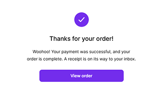
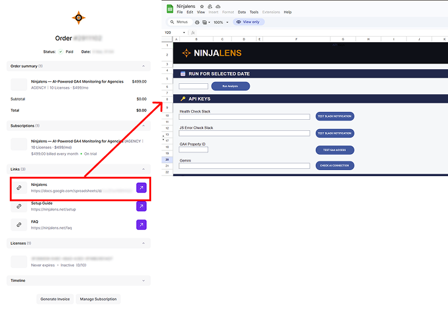
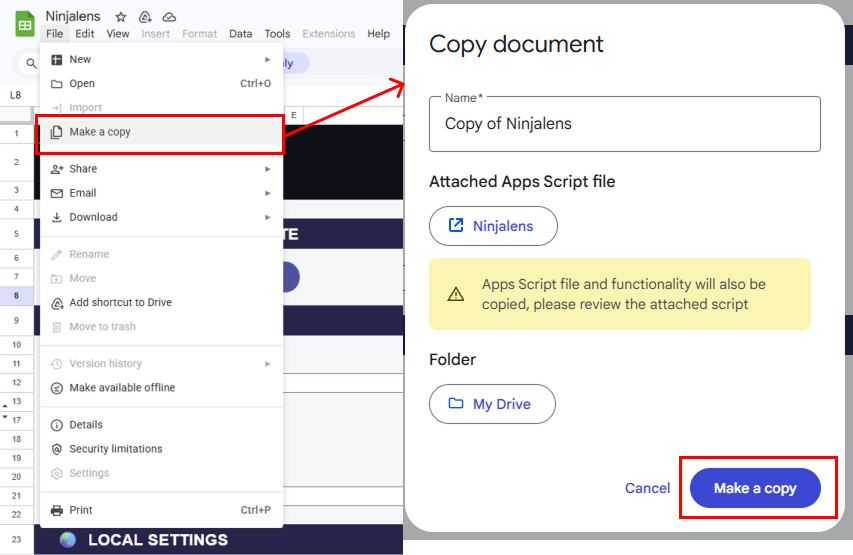
Open the copied spreadsheet and activate your license key from the Ninjalens menu.
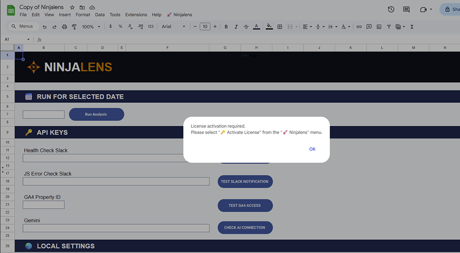
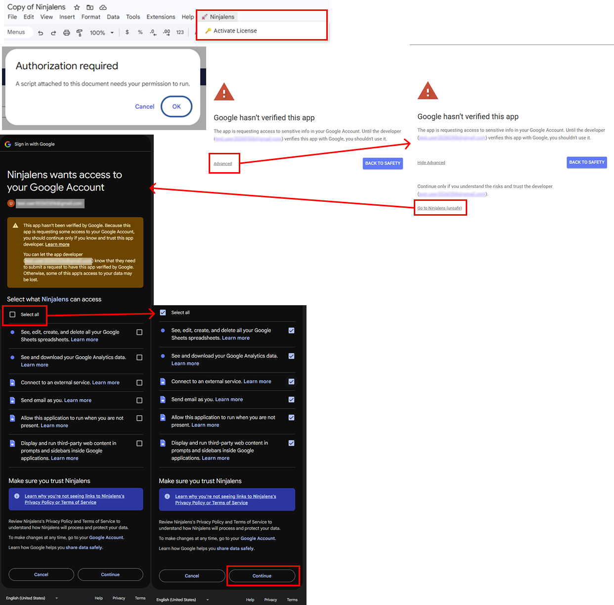
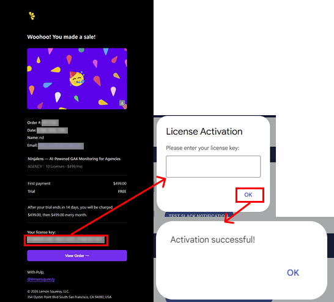
The Ninjalens sheet is where you enter all API keys and configuration settings. Fill in each field below — detailed instructions for obtaining each key are covered in steps 4–6.
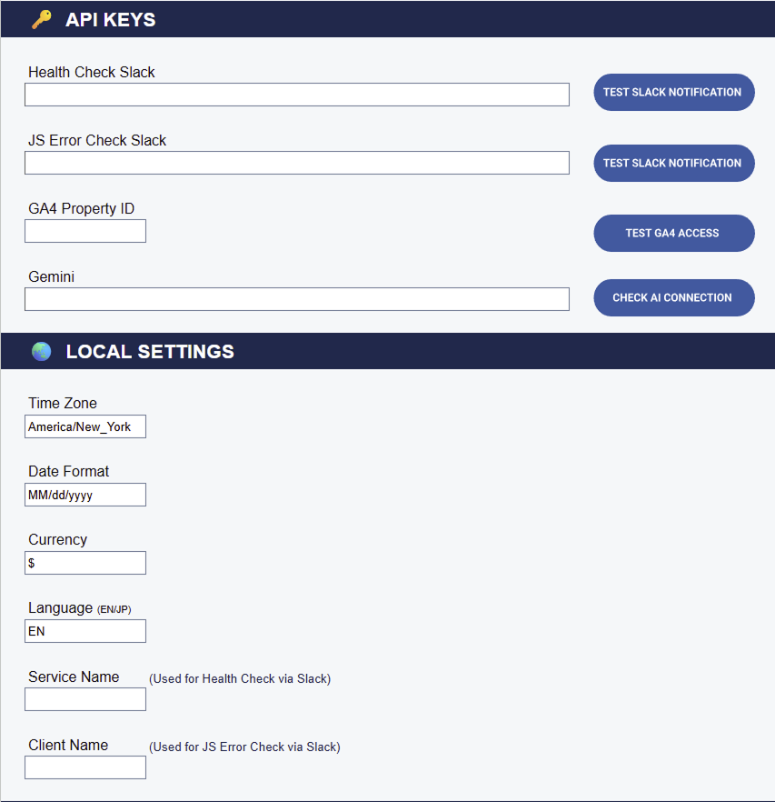
Follow the steps below to complete your Slack integration.
First, create the endpoint (URL) that will receive messages.
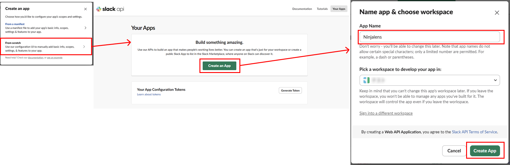
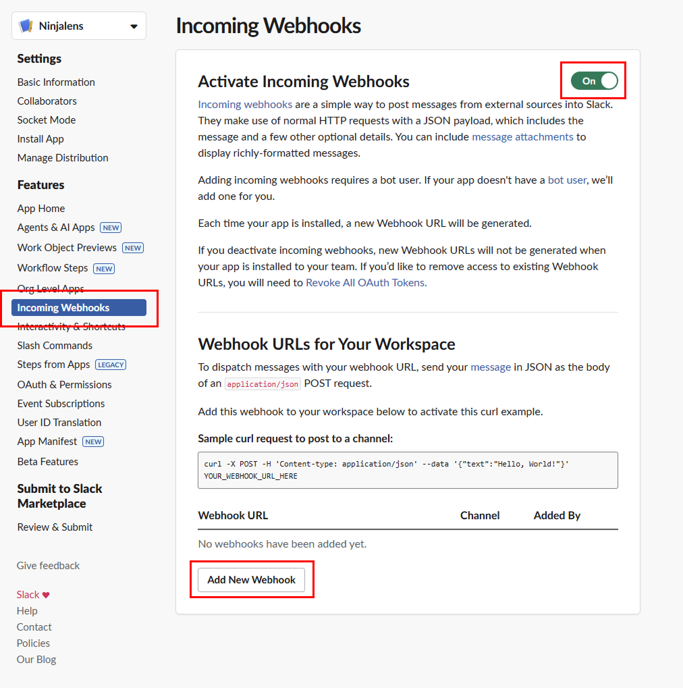
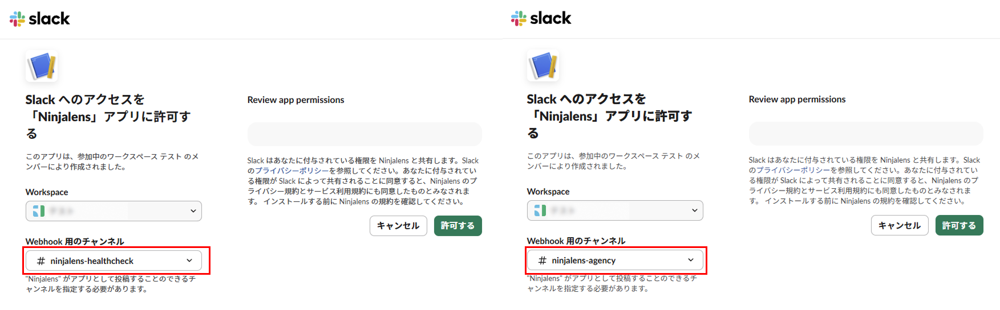
ninjalens-healthcheck for health checks, ninjalens-agency for error alerts) and click "Allow".Paste the URL into Ninjalens and verify that notifications are working correctly.
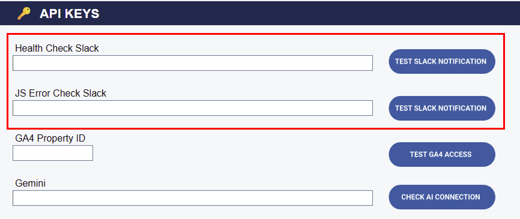
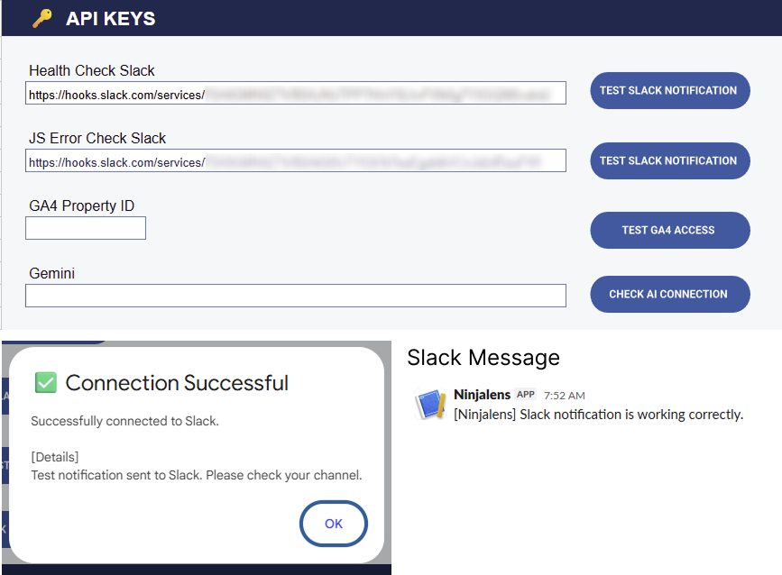
Find the Property ID Ninjalens needs to access your GA4 data, and enable the Google Analytics Data API.
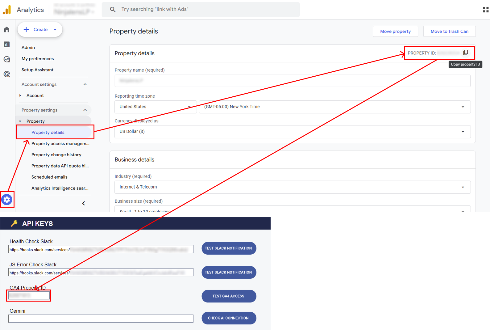
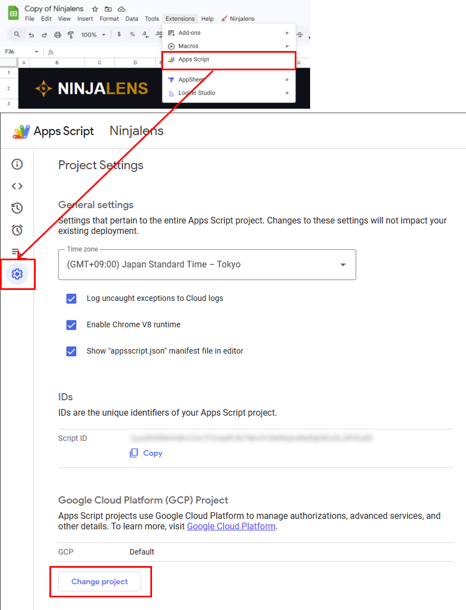
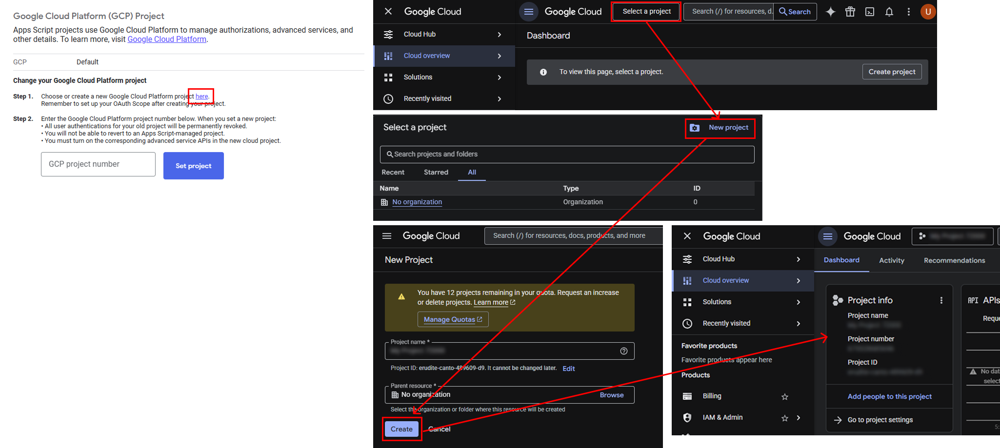
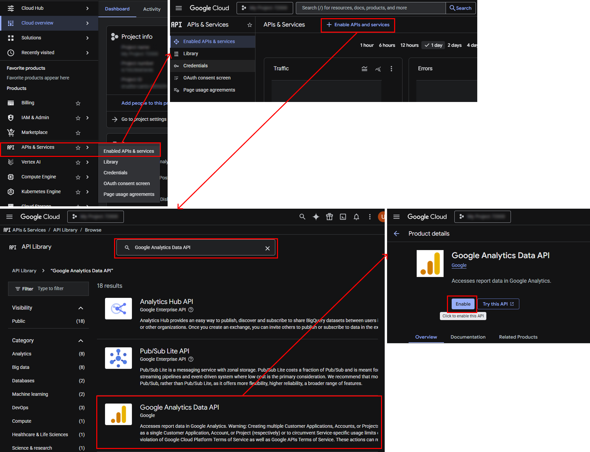
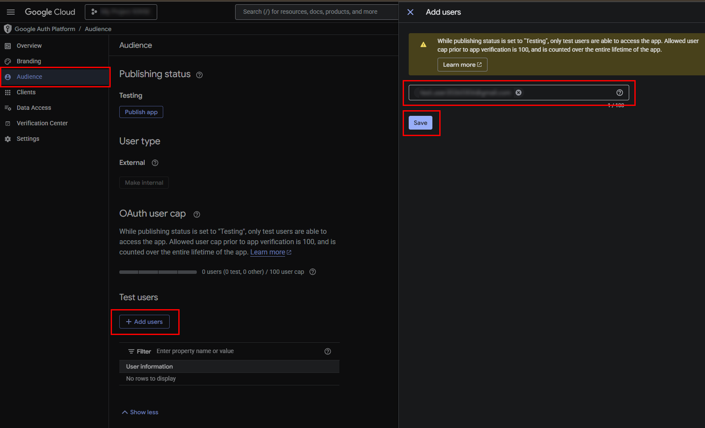
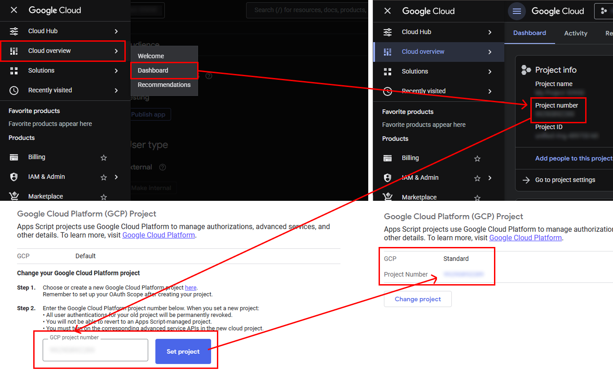
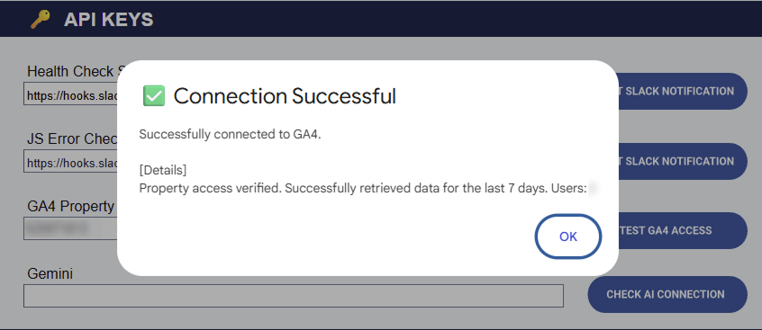
Ninjalens uses your own Gemini API key for AI analysis. This keeps your data private and costs typically under $1/month per property.
Generate a script tag from Ninjalens and add it to your site to enable JS error detection.
/cart for the cart page).<script> tag.<head> tag of your site, or add it as a Custom HTML tag in GTM.Before enabling the daily trigger, run a manual test report to verify your setup is working correctly.
Once everything is working correctly, enable the daily trigger so Ninjalens runs automatically every morning.